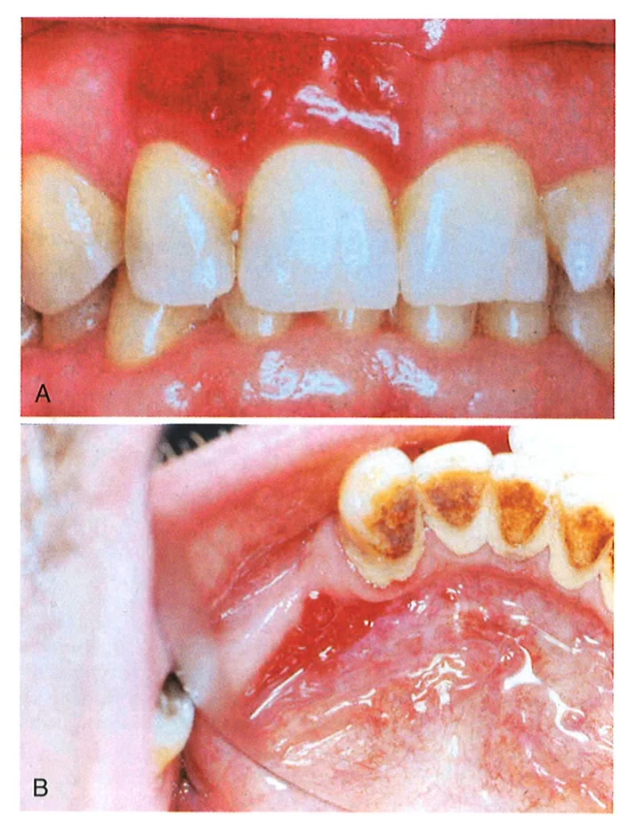
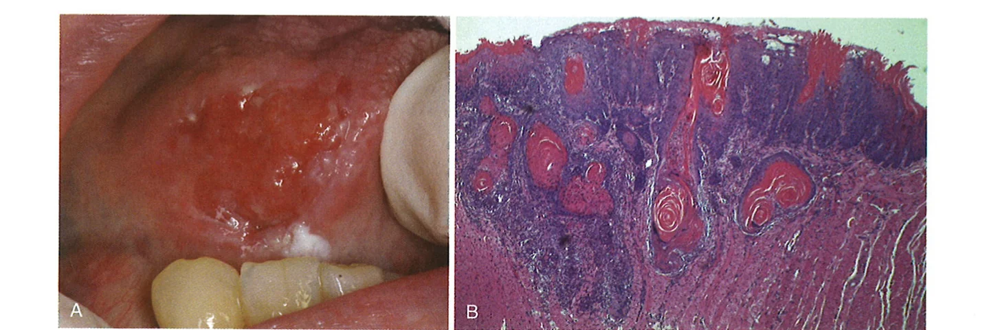
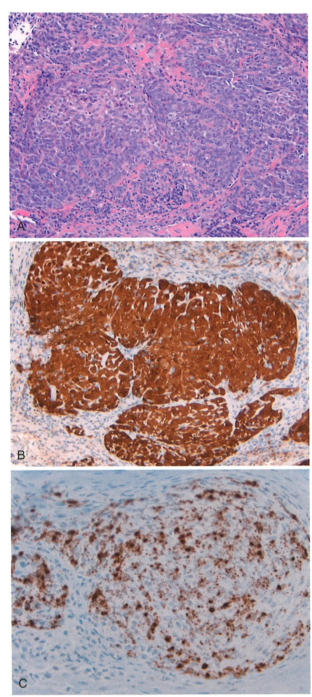
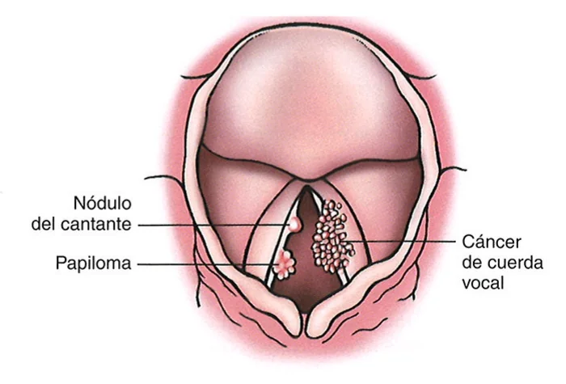
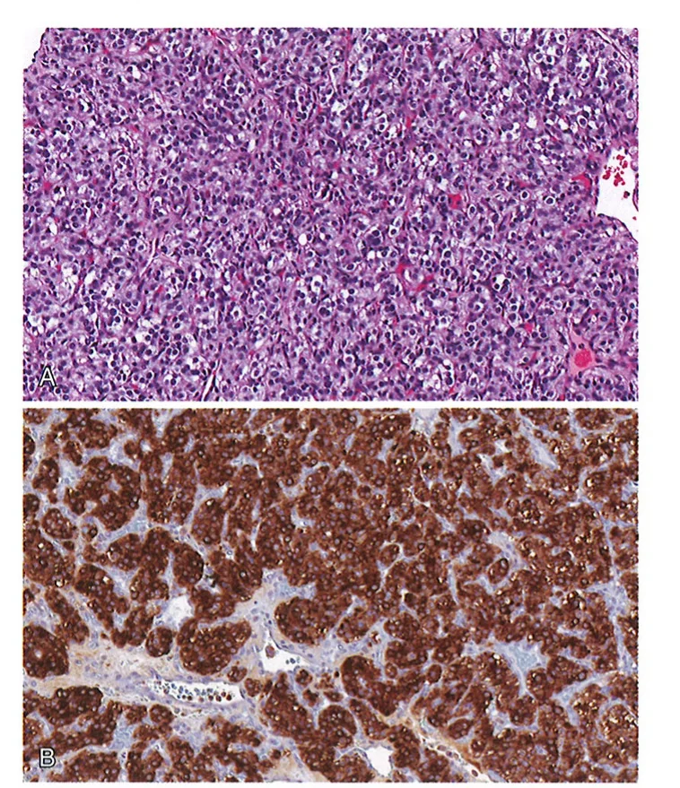
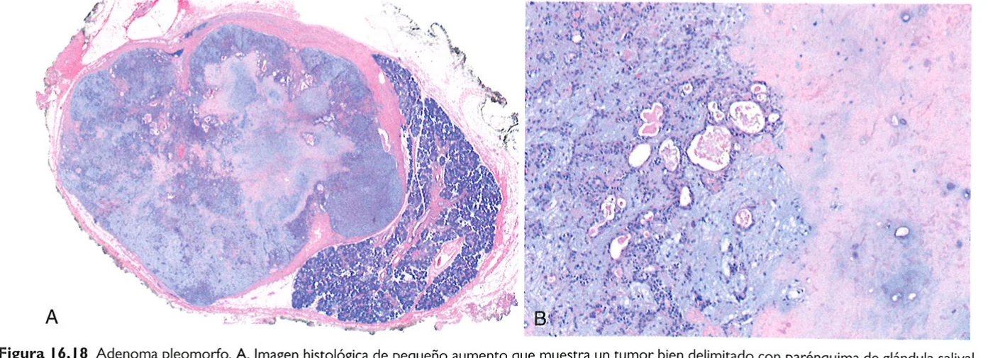
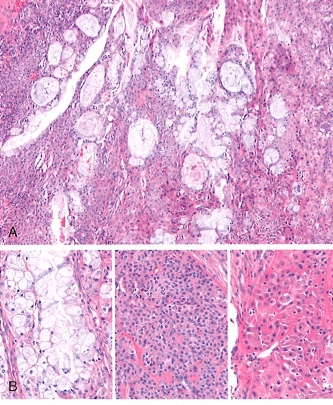
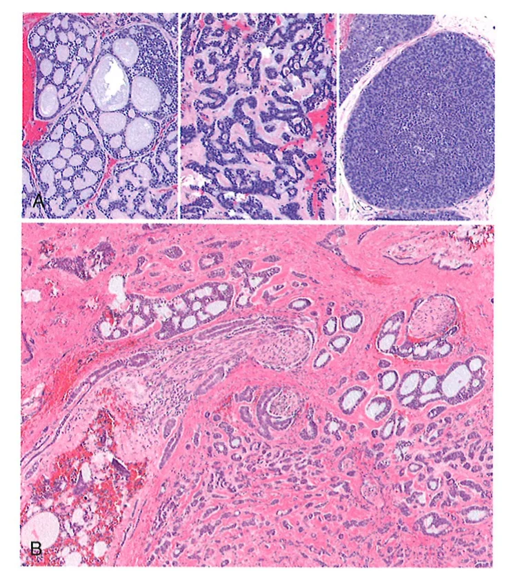

00 Alcance y método
Qué cubre esta guía
AlcanceCapítulo 16 del Robbins y Cotran, 10ª edición: páginas impresas 731-752 (22 páginas), contrastadas con el OCR del capítulo. Cada afirmación clínica lleva la página de origen.
Las citas p. N corresponden a la página impresa del libro. El texto se contrastó con el OCR del capítulo.
★ Repaso rápido
Lo esencial en 60 segundos
Si solo te llevas estas ideas
- Muguet se raspa con lecho eritematoso; leucoplasia vellosa (VEB, borde lateral de lengua, VIH) no se desprende p. 733-734.
- Leucoplasia: 3% de la población, 5-25% premaligna; eritroplasia ~90% ya es displasia grave o carcinoma in situ: la roja es peor que la blanca p. 734-735.
- CE VPH+ de orofaringe: no queratinizante, basaloide, p16+, ganglio grande con primario pequeño, mejor pronóstico; el de cavidad oral es tabaco y alcohol p. 735-737.
- Quiste branquial: lateral, segundo arco, tejido linfoide; tirogloso: línea media desde el orificio ciego; la mayoría de los CE quísticos del cuello son metástasis p. 745.
- Malignidad salival inversa al tamaño glandular: sublingual 70-90% maligno; mucoepidermoide con t(11;19) CRTC1-MAML2 es el maligno más frecuente p. 748.
- Granuloma piógeno es el tumor del embarazo; el granuloma periférico de células gigantes se diferencia de los tumores marrones del hiperparatiroidismo p. 732-733.
01 pp. 731-748
Ideas clave
Ideas clave
- La caries es desmineralización focal de esmalte y dentina por ácidos de la fermentación bacteriana de azúcares; es la principal causa de pérdida dentaria antes de los 35 años. La fluorapatita resiste la degradación ácida mejor que la hidroxiapatita p. 731.
- La gingivitis (inflamación por placa y cálculo) es reversible; la periodontitis destruye ligamento periodontal, hueso alveolar y cemento, con flora gramnegativa anaeróbica (Aggregatibacter actinomycetemcomitans, Porphyromonas gingivalis, Prevotella intermedia) y puede ser foco de endocarditis y abscesos pulmonares y cerebrales p. 732.
- Las lesiones reactivas de la mucosa oral (úlceras aftosas, fibroma irritativo, granuloma piógeno, fibroma osificante periférico, granuloma periférico de células gigantes) son procesos inflamatorios, no neoplásicos; el fibroma osificante periférico recidiva en 15-20% p. 732.
- La leucoplasia vellosa es una lesión del borde lateral de la lengua causada por el VEB en inmunodeprimidos; en VIH puede presagiar sida. Hiperparaqueratosis con células balonizadas; no se desprende (a diferencia de la candidiasis) p. 733-734.
- La leucoplasia oral (3% de la población) es premaligna en 5-25% de los casos; la eritroplasia, menos frecuente, es más ominosa: ~90% muestra displasia grave, carcinoma in situ o carcinoma mínimamente invasivo p. 734-735.
- El carcinoma epidermoide (CE) es el 95% de los tumores malignos de cabeza y cuello. En orofaringe, hasta el 80% albergan VPH oncogénico (sobre todo VPH-16); en cavidad oral predomina el CE "clásico" por tabaco y alcohol p. 735.
- El CE VPH-positivo: paciente más joven, no queratinizante, basaloide, p16+, primario pequeño con ganglionar voluminosa, mejor pronóstico y bajo riesgo de segundo tumor; el CE VPH-negativo es lo contrario p. 736-737.
- Las vías respiratorias superiores: rinitis infecciosa y alérgica, pólipos nasales, sinusitis; el linfoma NK/T nasal (VEB+) y la mucormicosis son las lesiones necrosantes de gravedad p. 739-740.
- En glándulas salivales, el potencial de malignidad es inversamente proporcional al tamaño de la glándula: parótida mayoría benigna (adenoma pleomorfo, tumor de Warthin); sublingual 70-90% maligno (carcinoma mucoepidermoide) p. 748.
- Quistes de cuello: branquial (segundo arco, lateral, adultos jóvenes) vs del conducto tirogloso (línea media, trayecto del descenso tiroideo desde el orificio ciego) p. 745.
02 pp. 731-737
Cavidad oral
Enfermedades de los dientes y estructuras de soporte
- Caries: desmineralización focal por ácidos de fermentación bacteriana de azúcares. Principal causa de pérdida dentaria antes de los 35 años. La fluoración del agua y la mejor higiene redujeron la incidencia en países industrializados; aumenta en países en desarrollo por consumo de alimentos procesados p. 731.
- Gingivitis: inflamación de la mucosa que rodea los dientes por acumulación de placa (biopelícula de bacterias, proteínas salivales y células descamadas; si mineraliza → sarro). Eritema, edema, sangrado; reversible con higiene p. 731-732.
- Periodontitis: inflamación de ligamento periodontal, hueso alveolar y cemento → aflojamiento y pérdida dentaria. En sitios sanos predominan grampositivos facultativos; en periodontitis activa, gramnegativos anaeróbicos y microaerófilos. Asociada a sida, leucemia, Crohn, diabetes, síndrome de Down, sarcoidosis y defectos de neutrófilos (Chédiak-Higashi, agranulocitosis, neutropenia cíclica) p. 732.
Lesiones inflamatorias/reactivas
- Úlceras aftosas: hasta 40% de la población, más en las dos primeras décadas; asociadas a enfermedad celiaca, EII y enfermedad de Behçet. Úlceras superficiales hiperémicas con exudado fino y halo eritematoso; resuelven espontáneamente en 7-10 días (persisten en inmunodeprimidos) p. 732.
- Fibroma por irritación (fibroma traumático, hiperplasia fibrosa focal): masa nodular submucosa en mucosa bucal a lo largo de la línea de mordida; reactivo a traumatismo repetitivo p. 732.
- Granuloma piógeno: encías de niños, adultos jóvenes y embarazadas (tumor del embarazo); rojo-violeta, ulcerado; proliferación vascularizada de tejido de granulación. Puede madurar a masa fibrosa o fibroma osificante periférico p. 732.
- Fibroma osificante periférico: crecimiento gingival reactivo; mujeres jóvenes; recidiva 15-20%, requiere extirpación hasta el periostio p. 732.
- Granuloma periférico de células gigantes: células gigantes multinucleadas en estroma fibroangiomatoso. Diferenciar del tumor central de células gigantes de los maxilares y de los tumores marrones del hiperparatiroidismo (múltiples) p. 733.
Infecciones
- VHS-1 (a veces VHS-2): gingivoestomatitis en niños (2-4 años, sintomática hasta en 20%), faringitis en adultos, infección crónica en inmunodeprimidos. Vesículas con acantólisis, inclusiones intranucleares eosinófilas y células gigantes (policariones; prueba de Tzanck). Latencia en ganglios (trigémino); la reactivación causa estomatitis recidivante (herpes labial, 1-3 mm, resuelve en 7-10 días) p. 733.
- Otros virus orales: herpes zóster, VEB (mononucleosis, carcinoma nasofaríngeo, linfoma), CMV, enterovirus (herpangina, mano-boca-pie) y sarampión p. 733.
- Candidiasis oral (muguet): Candida albicans coloniza al ~50% de la población; infección fúngica oral más frecuente. Forma seudomembranosa: membrana gris-blanca que se raspa fácilmente dejando base eritematosa , no confundir con la leucoplasia vellosa, que no se desprende. Factores: inmunodepresión (trasplante, neutropenia, quimioterapia, sida, diabetes) y antibióticos de amplio espectro p. 733.
- Infecciones fúngicas profundas con predilección por cavidad oral: histoplasmosis, blastomicosis, coccidioidomicosis, criptococosis, cigomicosis y aspergilosis; incidencia creciente en inmunodeprimidos p. 733.
Manifestaciones orales de enfermedades sistémicas
- Escarlatina: lengua de frambuesa/fresa; sarampión: manchas de Koplik (ulceraciones alrededor del conducto de Stensen); difteria: membrana blanco sucio en amígdalas; VIH: herpes, Candida, sarcoma de Kaposi, leucoplasia vellosa p. 734.
- Liquen plano: lesiones reticuladas en encaje (>50% de los pacientes con liquen plano cutáneo); eritema multiforme generalizado = síndrome de Stevens-Johnson; leucemia monocítica: hipertrofia e infiltración gingival; difenilhidantoína: fibrosis gingival; embarazo: tumor del embarazo; síndrome de Rendu-Osler-Weber: telangiectasias p. 734.
- Leucoplasia vellosa: VEB; manchas blancas confluentes hiperqueratósicas "vellosas" en el borde lateral de la lengua; microscopía: hiperparaqueratosis, acantosis y células balonizadas en la capa espinosa superior; se detectan ARN y proteínas del VEB. En VIH puede presagiar sida p. 733-734.
Lesiones precancerosas y cancerosas
- Leucoplasia: término clínico OMS para mancha blanca sin motivo aparente (excluye liquen plano, candidiasis, irritación evidente). 3% de la población; 5-25% premalignas; toda leucoplasia se considera precancerosa hasta descartarlo por histología p. 734.
- Eritroplasia: área roja aterciopelada, deprimida; mucho más ominosa: ~90% con displasia grave/carcinoma in situ/carcinoma mínimamente invasivo. Formas mixtas: leucoeritroplasia moteada. Adultos 40-70 años, varones 2:1; tabaco como antecedente común p. 734-735.
- ~15% de las lesiones premalignas progresa a CE en un promedio de 5 años; los criterios de displasia son subjetivos incluso entre patólogos p. 736.


Carcinoma epidermoide
- Epidemiología: 95% de los tumores malignos de cabeza y cuello; sexta neoplasia más común en el mundo; ~50.000 casos/año en EE. UU. y >650.000 en el mundo p. 735.
- Etiología: VPH de alto riesgo es hoy la principal causa de CE de orofaringe (hasta 80%, sobre todo VPH-16, en amígdalas, base de lengua y faringe); el CE de cavidad oral se asocia a tabaco y alcohol crónicos; masticar paan (nuez de areca, lima, tabaco) en India y Asia; radiación actínica y pipa en el labio inferior. Aumenta el CE oral en menores de 40 años sin factores de riesgo ni VPH p. 735.
- El CE orofaríngeo VPH+ se ha multiplicado más del doble en dos décadas; se espera que la vacuna VPH lo revierta. Los sitios de origen (criptas amigdalinas, base de lengua) no son accesibles a citología de detección, a diferencia del cérvix p. 735.
- Pronóstico: supervivencia a 5 años del CE clásico en etapa temprana ~80%, cae a 20% en etapa tardía; mejor supervivencia a largo plazo en CE VPH+. Segundos tumores primarios: 3-7% por año (el más alto de todas las neoplasias malignas); cancerización de campo; ~35% de probabilidad de un nuevo tumor primario a 5 años de seguimiento p. 735-736.
- Biología molecular (TCGA): mutaciones conductoras en TP53, CDKN2A, PIK3CA; novedosas y potencialmente dianas: NOTCH1 y FAT1. TP53 es el más mutado; el resto oscila entre 1 y 23%. Tumores VPH-negativos tienen más mutaciones somáticas; en los VPH-positivos, las oncoproteínas E6 y E7 desactivan las vías p53 y RB p. 736.
- Morfología: CE queratinizante clásico (VPH−) en superficie ventral de lengua, suelo de boca, labio inferior, paladar blando y encía; se presenta como masa ulcerada e indurada. CE VPH+ no queratinizante, basaloide, en criptas amigdalinas, sin lesión premaligna visible, con linfoadenopatías cervicales; marcador: p16 por IHC, confirmable con PCR o hibridación in situ p. 736-737.
- A diferencia del cérvix, en el CE queratinizante la displasia de espesor total (carcinoma in situ) no siempre precede a la invasión. El grado de diferenciación no se correlaciona con el comportamiento p. 737.
- Extensión: ganglios cervicales como sitio local más propicio; metástasis a distancia a mediastino, pulmones, hígado y huesos, a menudo ya presentes al diagnóstico p. 737.




| Característica | CE asociado a VPH | CE no asociado a VPH |
|---|---|---|
| Edad | Más joven | Edad avanzada |
| Factores de riesgo | Número de parejas con sexo oral | Tabaco, alcohol |
| Localización | Orofaringe | Cavidad oral |
| Presentación | Primario pequeño con ganglionar voluminosa | Primario amplio con ganglionar variable |
| Histología | No queratinizante | Queratinizante |
| Metástasis a distancia | Infrecuentes | Frecuentes |
| Pronóstico | Bueno | Malo |
| Segundo tumor primario | Bajo | Elevado |
Fuente: p. 737
CE VPH+ vs CE VPH-El CE VPH+ es no queratinizante, basaloide, p16+, con primario pequeño y ganglio voluminoso, mejor pronóstico y bajo riesgo de segundo tumor. El VPH- es queratinizante, tabaquil, con metástasis a distancia frecuentes y mal pronóstico p. 736-737.
03 pp. 739-744
Vías respiratorias superiores
Nariz
- Rinitis infecciosa (resfriado común): adenovirus, echovirus y rinovirus; mucosa engrosada, edematosa; infección bacteriana secundaria da exudado mucopurulento p. 739.
- Rinitis alérgica: hipersensibilidad IgE a pólenes, hongos, alérgenos animales y ácaros; 20% de la población estadounidense; respuesta de fase temprana y tardía, infiltrado rico en eosinófilos p. 739.
- Pólipos nasales: hasta 3-4 cm; mucosa edematosa, glándulas hiperplásicas, infiltrado con eosinófilos. Pese a la apariencia alérgica, la mayoría de los pacientes no son atópicos y solo 0,5% de los atópicos los desarrollan p. 739.
- Rinitis crónica y sinusitis: sinusitis aguda precedida de rinitis; a veces por extensión de infección periapical maxilar. Obstrucción del drenaje → empiema y mucocele. Sinusitis crónica polimicrobiana; hongos (mucormicosis) en diabéticos; componente del síndrome de Kartagener (bronquiectasias + situs inversus). Complicaciones: extensión a órbita, osteomielitis, tromboflebitis séptica dural p. 739-740.
- Lesiones necrosantes de la nariz: mucormicosis aguda (diabéticos e inmunodeprimidos), granulomatosis con poliangitis (Wegener) y linfoma NK/T nasal (VEB+, hombres asiáticos o latinoamericanos en 5ª-6ª décadas); sin tratamiento es rápidamente mortal; localizado responde a radioterapia con recaídas frecuentes p. 740.
Nasofaringe
- Faringitis y amigdalitis: mayormente víricas (rinovirus, echovirus, adenovirus; luego gripe y virus sincitial respiratorio); bacterianas sobre todo por estreptococos β-hemolíticos. Importancia: secuelas tardías , fiebre reumática y glomerulonefritis p. 740.
- Angiofibroma nasofaríngeo: casi exclusivo de varones adolescentes (piel clara, pelirrojos); pared posterolateral del techo nasal; resección con embolización preoperatoria. Recidiva ~20%, mortal 9%. Mutaciones de CTNNB1 (β-catenina); forma esporádica o asociada a poliposis adenomatosa familiar p. 740-741.
- Papiloma nasosinusal (de Schneider): exofítico, endofítico (invertido) u oncocítico; hombres 30-60 años; comportamiento localmente invasivo, recidivas si extirpación inadecuada; transformación maligna ~10%. Formas endofíticas con mutaciones de EGFR; el resto con VPH 6 y 11 p. 741.
- Neuroblastoma olfativo (estesioneuroblastoma): células neuroectodérmicas olfatorias, parte superior de la cavidad nasal; picos a los 15 y 50 años; obstrucción nasal y epistaxis. Tumor de células redondas pequeñas azules (diferenciar de linfoma, carcinoma de células pequeñas, sarcoma de Ewing, rabdomiosarcoma, melanoma); ENE+, sinaptofisina+, CD56+, cromogranina+. Supervivencia a 5 años 40-90% según estadio y grado p. 741.
- Carcinoma de línea media NUT: infrecuente, cualquier edad, extremadamente infiltrante y resistente; <1 año de supervivencia. Translocaciones que fusionan NUT con BRD4; los inhibidores de BRD4-NUT inducen diferenciación terminal (en estudio) p. 741.
- Carcinoma nasofaríngeo: asociado a VEB; tres patrones (CE queratinizante, no queratinizante, basaloide); "linfoepitelioma" es nombre obsoleto. Común en niños africanos y adultos del sur de China; dietas ricas en nitrosaminas, tabaco y vapores químicos como cofactores; anticuerpos anti-VEB y PCR de ADN del VEB en suero p. 741-742.
- Morfología y clínica: variante indiferenciada con células en sincitio, núcleos vesiculares, infiltrada por linfocitos T; EBER-1 por hibridación in situ. Oculto hasta estadios avanzados: obstrucción nasal, epistaxis, metástasis cervicales hasta en 70%. Radioterapia: supervivencia global a 5 años ~60%; no queratinizante 70-98% (radiosensible) vs queratinizante solo 20% p. 742.
Laringe
- Laringitis: alérgica, vírica, bacteriana, química o por reflujo gastroesofágico; en niños, la laringoepiglotitis (VSR, Haemophilus influenzae, estreptococos β-hemolíticos) es urgencia médica por obstrucción; el crup es una laringotraqueobronquitis con estridor inspiratorio p. 743.
- Nódulos reactivos (nódulos y pólipos de cuerdas vocales): grandes fumadores o sobreesfuerzo vocal (nódulos del cantante); ronquera progresiva; riesgo de cáncer casi inexistente. Por convención, nódulos = bilaterales; pólipos = unilaterales. Epitelio escamoso sobre núcleo mixoide laxo p. 743.
- Papiloma escamoso y papilomatosis: cuerdas vocales verdaderas, <1 cm, ejes fibrovasculares; solitarios en adultos, múltiples en niños (papilomatosis laríngea juvenil) por VPH 6 y 11 adquiridos en el canal del parto; recidivan con frecuencia, rara vez transforman en CE p. 743.
- Carcinoma de laringe: CE en hombres fumadores crónicos; alcohol sinérgico con tabaco; también asbesto, radiación y VPH. Secuencia hiperplasia→displasia→carcinoma: riesgo de transformación 1-2% a 5-10 años con displasia leve vs 5-10% con displasia grave; los cambios pueden regresar al dejar de fumar p. 743.
- 95% son CE habituales; mayoría en cuerdas vocales; hombres en la sexta década; debut con ronquera persistente, disfagia y disfonía. Pronóstico según estadio; técnica conservadora de órgano en etapas tempranas p. 744.


04 pp. 744-745
Oídos
- Frecuencia descendente: otitis aguda y crónica (con colesteatoma) > otoesclerosis > pólipos auditivos > laberintitis > carcinomas > paragangliomas p. 744.
- Otitis media aguda y crónica: lactantes y niños; vírica inicial, sobreinfección por Streptococcus pneumoniae, H. influenzae o Moraxella catarrhalis; la crónica por Pseudomonas aeruginosa, S. aureus u hongos. Puede perforar el tímpano, invadir huesecillos y laberinto y causar encefalitis o abscesos. En diabéticos, la otitis por P. aeruginosa es necrosante destructiva p. 744.
- Colesteatoma: quiste no neoplásico de 1-4 cm asociado a otitis media crónica; epitelio escamoso queratinizante con restos de queratina y cristales de colesterol; erosiona huesecillos, laberinto y hueso adyacente p. 744-745.
- Otoesclerosis: depósito anómalo de hueso alrededor de la ventana oval; anquilosis del estribo → hipoacusia proporcional a la inmovilización; bilateral; autosómica dominante con penetrancia variable; desacoplamiento entre reabsorción y formación ósea p. 745.
- Tumores del oído: carcinomas basocelulares y CE del pabellón (varones ancianos, sol) rara vez metastatizan; el CE del conducto auditivo externo (mujeres de mediana edad, no solar) puede invadir la cavidad craneal y da solo ~50% de supervivencia a 5 años p. 745.
05 pp. 745-746
Cuello
Quiste branquial (quiste linfoepitelial cervical)
- Restos del segundo arco branquial; adultos jóvenes de 20-40 años; cara lateral superior del cuello a lo largo del esternocleidomastoideo. Quistes de 2-5 cm, revestidos por epitelio escamoso estratificado o cilíndrico seudoestratificado, con tejido linfoide con centros germinales en la pared. No transformación maligna. No confundir: la mayoría de los CE quísticos del cuello son metástasis de tumores de vías aerodigestivas superiores o del aparato digestivo p. 745.
Quiste del conducto tirogloso
- Restos del descenso del primordio tiroideo desde el orificio ciego en la base de la lengua hacia la línea media cervical anterior. Quistes de 1-4 cm; epitelio escamoso cerca de la base de la lengua, cilíndrico seudoestratificado en ubicaciones inferiores; pared con agregados linfoides o restos tiroideos. Transformación maligna extremadamente infrecuente; resección quirúrgica p. 745.
Paraganglioma (tumor del cuerpo carotideo)
- ~70% de los paragangliomas extrasuprarrenales ocurren en cabeza y cuello. Mutaciones con pérdida de función en subunidades de la succinato deshidrogenasa (SDH) o sus cofactores, hereditarias y esporádicas. Mayor incidencia a gran altura p. 746.
- Dos localizaciones: paraganglios paravertebrales (simpáticos, cromafines, catecolaminas) y de la cadena aortopulmonar de cabeza y cuello (cuerpos carotideos, aórticos, yugulotimpánicos, ganglio nudoso del vago), parasimpáticos, que rara vez sintetizan catecolaminas p. 746.
- Morfología: masa rojo-rosada o parda <6 cm en la bifurcación carotídea; nidos zellballen de células principales neuroendocrinas (cromogranina+, sinaptofisina+, ENE+, CD56+, CD57+) rodeados de células sustentaculares S-100+ p. 746.
- 5ª-6ª décadas; esporádicos o familiares. Los asociados a MEN-2 son feocromocitomas suprarrenales; los de los síndromes PGL 1-4 (genes SDH) se localizan en cabeza y cuello; ~un tercio de los paragangliomas de cabeza y cuello tienen mutación de línea germinal p. 746.
- Recidivan con frecuencia tras la extirpación; ~50% acaba siendo mortal por crecimiento infiltrante. La histología no predice el pronóstico (mitosis, pleomorfismo e invasión vascular no son fiables); las mutaciones de SDHB se asocian a 30-50% de metástasis p. 746.


Quiste branquial vs tiroglosoBranquial: segundo arco, lateral, adultos jóvenes, tejido linfoide con centros germinales, nunca maligniza. Tirogloso: línea media por el trayecto del descenso tiroideo desde el orificio ciego. Cautela: la mayoría de los CE quísticos del cuello son metástasis p. 745.
06 pp. 747-749
Glándulas salivales
Xerostomía
- Boca seca por disminución de saliva; hasta 20% en mayores de 70 años en algunas poblaciones. Causas: síndrome de Sjögren (con queratoconjuntivitis seca), radioterapia de tumores de cabeza y cuello y, con mayor frecuencia, fármacos (anticolinérgicos, antidepresivos/antipsicóticos, diuréticos, antihistamínicos). Complicaciones: caries, candidiasis, disfagia p. 747.
Inflamación (sialoadenitis)
- Mucocele: forma más prevalente; labio inferior, fluctuante azul translúcido, por obstrucción o rotura de un conducto con fuga de saliva al estroma. Seudoquiste de tejido de granulación lleno de mucina y macrófagos; recidiva si la resección es incompleta. Ránula: quiste epitelizado del conducto sublingual; la ránula "hundida" disecciona a través del músculo milohioideo p. 747.
- Sialolitiasis y sialoadenitis bacteriana inespecífica: glándulas submandibulares; cálculos obstructivos + infección por S. aureus y Streptococcus viridans. Predisponen: fenotiacinas (hiposecreción), deshidratación, cirugía mayor reciente en ancianos. Casi siempre unilateral p. 747-748.
- Parotiditis: causa vírica más común de sialoadenitis (parótidas, páncreas, testículos) p. 747.
Neoplasias
- Más de 30 tipos histológicos; unas pocas constituyen >90% de los tumores. <2% de todos los tumores humanos. 65-80% parótida, 10% submandibular, resto en glándulas menores y sublingual. Potencial maligno inversamente proporcional al tamaño de la glándula: parótida mayoría benigna; 40% submandibular, 50% glándulas menores, 70-90% sublinguales malignos. Solo ~5% antes de los 16 años p. 748.
- No hay criterios clínicos fiables para diferenciar benigno de maligno; ambos miden 4-6 cm al diagnóstico p. 748.
| Tumor | Clasificación | Datos clave |
|---|---|---|
| Adenoma pleomorfo | Benigno | 60% de los tumores parotídeos; células ductales, mioepiteliales y mesenquimatosas ("tumor mixto"); PLAG1 e HMGA2; recidiva 4% tras parotidectomía vs 25% tras enucleación; transformación maligna 2% (<5 años) a 10% (>15 años) |
| Tumor de Warthin | Benigno | 2ª neoplasia más frecuente; casi exclusivo de parótida; hombres, 5ª-7ª décadas; riesgo ×8 en fumadores; 10% multifocal, 10% bilateral; doble capa oncocítica sobre estroma linfoide; recidiva 2% |
| Carcinoma mucoepidermoide | Maligno | Maligno primario más frecuente (~15% de todos los tumores salivales); 60-70% parótida; translocación t(11;19)(q21;p13) → CRTC1-MAML2; células escamosas, mucosas e intermedias; grado bajo: recidiva 15%, supervivencia a 5 años >90%; grado alto: 30% recidiva y 30% metástasis, supervivencia 50% |
| Carcinoma adenoideo quístico | Maligno | 50% en glándulas menores (palatinas); patrón cribiforme "queso suizo" con material hialino (membrana basal); infiltración perineural; MYB-NFIB; 50% o más metastatizan a hueso, hígado y encéfalo décadas después; supervivencia 60-70% a 5 años, 30% a 10, 15% a 15 |
| Carcinoma de células acinares | Maligno | 2-3% de los tumores salivales; parótida; células semejantes a acinos serosos con gránulos de cimógeno púrpura; 10-15% metastatiza a ganglios; supervivencia ~90% a 5 años, 60% a 20 |
Fuente: p. 748-751






- El carcinoma ex adenoma pleomorfo exige adenoma pleomorfo benigno residual para su diagnóstico; mortalidad a 5 años 30-50% p. 749.
Malignidad inversa al tamañoParótida: mayoría benigna (adenoma pleomorfo 60%, Warthin 2ª); sublingual: 70-90% maligno. Mucoepidermoide con t(11;19) CRTC1-MAML2 y adenoideo quístico con infiltración perineural son los malignos clave p. 748-751.
07 pp. 737-739
Quistes y tumores odontógenos
- Los quistes odontógenos derivan de restos de epitelio odontógeno de los maxilares; se clasifican en inflamatorios (radicular, residual, paradental) y del desarrollo (dentígero, queratoquiste odontógeno, gingival, de erupción, periodontal lateral, glandular, epitelial calcificante, del conducto nasopalatino) p. 737-738.
- Quiste dentígero: alrededor de la corona de un diente no erupcionado (acumulación de líquido entre diente y folículo); unilocular, típicamente en un tercer molar impactado; epitelio escamoso estratificado fino; extirpación curativa p. 737.
- Tumor odontógeno queratoquístico (antes queratoquiste odontógeno): 10-40 años, hombres, mandíbula posterior; radiolúcido uni- o multilocular; epitelio queratinizado con células basales prominentes y superficie ondulada; comportamiento localmente invasivo, recidiva hasta 60% si extirpación inadecuada. Múltiples quistes → síndrome de Gorlin (carcinoma basocelular nevoideo), mutación de PTCH en 9q22 p. 737.
- Quiste radicular: lesión inflamatoria frecuente en el vértice del diente, secundaria a pulpitis por caries o traumatismo; necrosis pulpar → granulación → epitelización. El término antiguo "granuloma periapical" persiste, aunque no hay inflamación granulomatosa verdadera; el tratamiento requiere eliminar el irritante y restaurar o extraer el diente p. 738.
- Tumores odontógenos: de epitelio, mesénquima o ambos; algunos neoplasias verdaderas, otros hamartomas. Los dos más relevantes: odontoma y ameloblastoma p. 738-739.
- Odontoma: tumor odontógeno más común; epitelio con extenso depósito de esmalte y dentina; hamartoma más que neoplasia; cura con extirpación local p. 739.
- Ameloblastoma: epitelio odontógeno sin diferenciación ectomesenquimatosa; quístico, crecimiento lento, localmente invasivo, evolución indolente; requiere amplia resección para prevenir recidiva p. 739.
08 pp. 731-751
Puntos de examen
- Caries: principal causa de pérdida dentaria antes de los 35 años; la fluorapatita del esmalte resiste mejor los ácidos que la hidroxiapatita p. 731.
- No confundir gingivitis (reversible, solo mucosa) con periodontitis (destruye ligamento, hueso alveolar y cemento → pérdida dentaria) p. 731-732.
- Periodontitis activa: flora gramnegativa anaeróbica (A. actinomycetemcomitans, P. gingivalis, P. intermedia); sitios sanos: grampositivos facultativos p. 732.
- Periodontitis como foco séptico: endocarditis infecciosa, abscesos pulmonares y cerebrales p. 732.
- Asociar periodontitis sistémica con: sida, leucemia, Crohn, diabetes, síndrome de Down, sarcoidosis, defectos de neutrófilos p. 732.
- Úlceras aftosas: hasta 40% de la población, las dos primeras décadas, asocian celiaca, EII y Behçet; resuelven en 7-10 días p. 732.
- Granuloma piógeno = "tumor del embarazo" en encías; no confundir el granuloma periférico de células gigantes con los tumores marrones del hiperparatiroidismo (múltiples) p. 732-733.
- Muguet se raspa; leucoplasia vellosa no se desprende , la distinción práctica clave en lesiones blancas orales p. 733-734.
- Leucoplasia vellosa = VEB, borde lateral de la lengua, inmunodeprimidos; células balonizadas en capa espinosa; en VIH puede presagiar sida p. 733-734.
- Manchas de Koplik (sarampión) rodean el conducto de Stensen p. 734.
- Leucoplasia: 3% de la población, 5-25% premaligna; eritroplasia: menos frecuente pero ~90% ya es displasia grave/carcinoma in situ/invasión mínima , la roja es peor que la blanca p. 734-735.
- Leucoplasia/eritroplasia: 40-70 años, varones 2:1, tabaco p. 735.
- El CE es el 95% de los tumores malignos de cabeza y cuello; sexta neoplasia mundial; ~50.000 casos/año en EE. UU. p. 735.
- VPH-16: causa principal del CE de orofaringe (hasta 80% en amígdalas y base de lengua); el CE de cavidad oral sigue siendo tabaco+alcohol. No confundir los dos subtipos p. 735.
- CE VPH+ (p16+, basaloide, no queratinizante, primario pequeño con ganglio grande, mejor pronóstico, bajo riesgo de 2º tumor) vs CE VPH− (queratinizante, tabaquil, peor pronóstico) p. 737.
- En CE, TP53 es el gen más mutado; con CDKN2A y PIK3CA como conductores; dianas novedosas: NOTCH1 y FAT1; E6/E7 del VPH desactivan p53 y RB p. 736.
- Segundos tumores primarios en CE: 3-7% por año, la tasa más alta de todas las neoplasias malignas; concepto de cancerización de campo; ~35% de riesgo acumulado a 5 años p. 735-736.
- Pólipos nasales: solo 0,5% de los atópicos los desarrollan pese a su apariencia alérgica p. 739.
- Sinusitis maxilar puede nacer de una infección periapical dental; el síndrome de Kartagener (bronquiectasias + situs inversus + sinusitis) es por discinesia ciliar p. 739-740.
- Lesión nasal necrosante en hombre asiático o latinoamericano de 5ª-6ª década = linfoma NK/T nasal, VEB+ p. 740.
- Angiofibroma nasofaríngeo: varón adolescente epistáctico, CTNNB1; papiloma invertido (de Schneider): EGFR o VPH 6/11, transformación maligna ~10% p. 740-741.
- Carcinoma nasofaríngeo: VEB (EBER-1 por hibridación in situ); metastatiza a ganglios cervicales en hasta 70%; radiosensibilidad opuesta entre patrones: no queratinizante 70-98% de supervivencia a 5 años vs queratinizante 20% p. 741-742.
- Nódulos vocales bilaterales vs pólipos unilaterales; ninguno transforma en cáncer; papilomatosis laríngea juvenil = VPH 6/11 por canal del parto p. 743.
- Carcinoma laríngeo: displasia leve 1-2% de riesgo de transformación vs displasia grave 5-10%; 95% CE en cuerdas vocales de hombres fumadores; debut con ronquera persistente p. 743-744.
- Colesteatoma: quiste de otitis media crónica, no neoplásico, con queratina y cristales de colesterol; otitis por P. aeruginosa en diabéticos = otitis necrosante destructiva p. 744-745.
- Quiste branquial (2º arco, lateral, tejido linfoide, adultos jóvenes, nunca maligniza) vs quiste tirogloso (trayecto del orificio ciego, línea media, restos tiroideos); la mayoría de los CE quísticos del cuello son metástasis p. 745.
- Tumor del cuerpo carotideo: zellballen (células principales neuroendocrinas + células sustentaculares S-100+); histología no predice pronóstico; SDHB → 30-50% de metástasis p. 746.
- Malignidad de glándulas salivales inversa al tamaño: sublingual 70-90% maligno; el mucoepidermoide es el maligno más frecuente (~15%) con t(11;19) CRTC1-MAML2; el adenoma pleomorfo es el tumor más frecuente (60% parótida) p. 748-750.
- Tumor de Warthin: riesgo ×8 en fumadores, casi solo parótida, 10% multifocal y 10% bilateral, doble capa oncocítica + estroma linfoide p. 749.
- Carcinoma adenoideo quístico: patrón cribiforme, infiltración perineural, MYB-NFIB, metástasis tardías a hueso, hígado y encéfalo; supervivencia cae de 60-70% (5 años) a 15% (15 años) p. 751.
- Tumor odontógeno queratoquístico: recidiva hasta 60%; quistes múltiples = síndrome de Gorlin (PTCH, 9q22) p. 737.
★ Atlas
Figuras del capítulo
Toca una miniatura para volver a la figura en su sección.